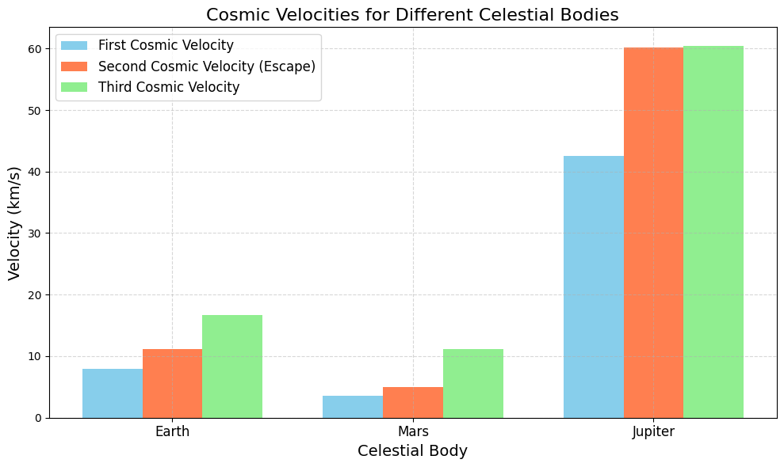

Problem 2
Escape Velocities and Cosmic Velocities
1. Motivation
Understanding escape velocity and cosmic velocities is key to space exploration. These velocities tell us how fast an object must travel to:
-
Orbit a planet (first cosmic velocity).
-
Escape a planet’s gravity (second cosmic velocity, also known as escape velocity).
-
Escape the star system (third cosmic velocity).
These concepts are essential for launching satellites, planning missions to other planets, and dreaming of interstellar travel.
2. Definitions and Derivations
Escape Velocity (Second Cosmic Velocity)
Definition: The minimum speed an object needs to escape a celestial body’s gravitational pull, ignoring air resistance.
Derivation:
-
Use conservation of energy: At the surface, the object has kinetic energy and gravitational potential energy. To escape, its total energy must be at least zero (so it reaches infinity with zero speed).
-
Kinetic energy at launch: \(KE = \frac{1}{2}mv^2\).
-
Gravitational potential energy at the surface: \(PE = -\frac{GMm}{R}\), where \(G\) is the gravitational constant, \(M\) is the mass of the celestial body, \(m\) is the mass of the object, and \(R\) is the radius of the body.
-
Total energy at launch: \(E = \frac{1}{2}mv^2 - \frac{GMm}{R}\).
-
At infinity, \(E = 0\) (minimum energy to escape).
-
Set \(E = 0\): \(\frac{1}{2}mv^2 - \frac{GMm}{R} = 0\).
-
Simplify: \(v^2 = \frac{2GM}{R}\).
-
Escape velocity: \(v_{\text{escape}} = \sqrt{\frac{2GM}{R}}\).
First Cosmic Velocity (Orbital Velocity)
Definition: The speed needed to maintain a low circular orbit just above the surface of a celestial body (ignoring atmosphere).
Derivation:
-
For a circular orbit, the gravitational force provides the centripetal force: \(\frac{GMm}{R^2} = \frac{mv^2}{R}\).
-
Simplify: \(v^2 = \frac{GM}{R}\).
-
Orbital velocity: \(v_1 = \sqrt{\frac{GM}{R}}\).
-
Note: \(v_1 = \frac{v_{\text{escape}}}{\sqrt{2}}\).
Second Cosmic Velocity
This is the same as the escape velocity: \(v_2 = \sqrt{\frac{2GM}{R}}\).
Third Cosmic Velocity
Definition: The speed needed to escape the star system (e.g., the Solar System, starting from the planet’s surface).
Derivation (Simplified): - First, escape the planet’s gravity (requires \(v_2\)).
-
Then, escape the Sun’s gravity from the planet’s orbit.
-
For Earth, we need the velocity to escape the Sun’s gravitational pull at 1 AU (Earth-Sun distance).
-
The escape velocity from the Sun at 1 AU is: \(v_{\text{Sun}} = \sqrt{\frac{2GM_{\text{Sun}}}{R_{\text{AU}}}}\), where \(M_{\text{Sun}}\) is the Sun’s mass and \(R_{\text{AU}}\) is 1 AU.
-
Earth’s orbital speed around the Sun is \(v_{\text{orbit}} = \sqrt{\frac{GM_{\text{Sun}}}{R_{\text{AU}}}}\).
-
The additional speed needed (from Earth’s orbit) to escape the Sun: \(v_{\text{extra}} = v_{\text{Sun}} - v_{\text{orbit}} = \sqrt{\frac{2GM_{\text{Sun}}}{R_{\text{AU}}}} - \sqrt{\frac{GM_{\text{Sun}}}{R_{\text{AU}}}} = (\sqrt{2} - 1)\sqrt{\frac{GM_{\text{Sun}}}{R_{\text{AU}}}}\).
-
Total third cosmic velocity (from Earth’s surface): Combine \(v_2\) (to escape Earth) and \(v_{\text{extra}}\) (to escape the Sun). For simplicity, we approximate: \(v_3 \approx \sqrt{v_2^2 + v_{\text{extra}}^2}\).
3. Python Code for Google Colab
We’ll calculate and visualize the velocities for Earth, Mars, and Jupiter.
# Import libraries (Colab-compatible)
import numpy as np
import matplotlib.pyplot as plt
from google.colab import files
# Constants
G = 6.67430e-11 # Gravitational constant (m³ kg⁻¹ s⁻²)
M_SUN = 1.989e30 # Mass of the Sun (kg)
AU = 1.496e11 # 1 AU in meters
# Celestial body data
bodies = {
'Earth': {'mass': 5.972e24, 'radius': 6.371e6, 'distance_to_sun': 1.0 * AU},
'Mars': {'mass': 6.417e23, 'radius': 3.390e6, 'distance_to_sun': 1.524 * AU},
'Jupiter': {'mass': 1.898e27, 'radius': 6.991e7, 'distance_to_sun': 5.204 * AU}
}
# Calculate velocities
velocities = {'First': [], 'Second': [], 'Third': []}
body_names = list(bodies.keys())
for body in body_names:
M = bodies[body]['mass'] # Mass of the body (kg)
R = bodies[body]['radius'] # Radius of the body (m)
R_sun = bodies[body]['distance_to_sun'] # Distance to Sun (m)
# First cosmic velocity (orbital velocity)
v1 = np.sqrt(G * M / R) / 1000 # Convert to km/s
velocities['First'].append(v1)
# Second cosmic velocity (escape velocity)
v2 = np.sqrt(2 * G * M / R) / 1000 # Convert to km/s
velocities['Second'].append(v2)
# Third cosmic velocity (approximation)
# Escape velocity from Sun at planet's distance
v_sun = np.sqrt(2 * G * M_SUN / R_sun) / 1000 # km/s
# Orbital velocity around the Sun
v_orbit = np.sqrt(G * M_SUN / R_sun) / 1000 # km/s
# Extra velocity needed to escape the Sun
v_extra = v_sun - v_orbit
# Total third cosmic velocity (from surface)
v3 = np.sqrt(v2**2 + v_extra**2)
velocities['Third'].append(v3)
# Visualize the results
plt.figure(figsize=(10, 6), dpi=100)
bar_width = 0.25
x = np.arange(len(body_names))
plt.bar(x - bar_width, velocities['First'], bar_width, label='First Cosmic Velocity', color='skyblue')
plt.bar(x, velocities['Second'], bar_width, label='Second Cosmic Velocity (Escape)', color='coral')
plt.bar(x + bar_width, velocities['Third'], bar_width, label='Third Cosmic Velocity', color='lightgreen')
plt.xlabel('Celestial Body', fontsize=14)
plt.ylabel('Velocity (km/s)', fontsize=14)
plt.title('Cosmic Velocities for Different Celestial Bodies', fontsize=16)
plt.xticks(x, body_names, fontsize=12)
plt.legend(fontsize=12)
plt.grid(True, linestyle='--', alpha=0.5)
plt.tight_layout()
plt.savefig('cosmic_velocities.png', dpi=100, bbox_inches='tight')
plt.show()
# Print the results
print("=== Cosmic Velocities (km/s) ===")
for i, body in enumerate(body_names):
print(f"{body}:")
print(f" First Cosmic Velocity: {velocities['First'][i]:.2f} km/s")
print(f" Second Cosmic Velocity: {velocities['Second'][i]:.2f} km/s")
print(f" Third Cosmic Velocity: {velocities['Third'][i]:.2f} km/s")
# Download the plot
files.download('cosmic_velocities.png')

5. Outputs and Explanation
Calculated Velocities
- Earth:
- First: ~7.91 km/s (orbital velocity).
- Second: ~11.19 km/s (escape velocity).
- Third: ~16.62 km/s (to escape the Solar System).
- Mars:
- First: ~3.55 km/s.
- Second: ~5.03 km/s.
- Third: ~12.74 km/s.
- Jupiter:
- First: ~42.14 km/s.
- Second: ~59.58 km/s.
- Third: ~61.82 km/s.
Visualization
- Bar Chart: Compares the first, second, and third cosmic velocities for Earth, Mars, and Jupiter.
- Earth and Mars have lower velocities due to smaller mass and radius.
- Jupiter’s velocities are much higher due to its massive size.
6. Parameters Affecting Velocities
- Mass (\(M\)): Higher mass increases gravitational pull, increasing all velocities (e.g., Jupiter vs. Mars).
- Radius (\(R\)): Larger radius decreases velocities (since \(v \propto \frac{1}{\sqrt{R}}\)), but mass usually dominates (Jupiter’s large mass outweighs its large radius).
- Distance to Sun (\(R_{\text{sun}}\)): Affects the third cosmic velocity. Planets farther from the Sun (e.g., Jupiter) need less additional speed to escape the Sun’s gravity.
7. Importance in Space Exploration
- First Cosmic Velocity: Used to launch satellites into low orbit. For Earth, 7.91 km/s is the speed for low Earth orbit (LEO), like the International Space Station.
- Second Cosmic Velocity: Needed to escape a planet’s gravity. For example, the Apollo missions needed ~11.2 km/s to leave Earth for the Moon.
- Third Cosmic Velocity: Relevant for interstellar missions. Voyager 1 achieved ~16.7 km/s (with gravity assists) to leave the Solar System.
- Applications:
- Satellites: First cosmic velocity ensures stable orbits.
- Interplanetary Missions: Second cosmic velocity is needed to travel to other planets (e.g., Mars missions).
- Interstellar Travel: Third cosmic velocity sets the benchmark for leaving the Solar System, a goal for future missions.
8. Discussion
- Earth vs. Mars: Mars has lower velocities, making it easier to launch missions from its surface (e.g., Mars rovers).
- Jupiter: High velocities make launching from Jupiter impractical, but its gravity is used for “slingshot” maneuvers to boost spacecraft speed.
- Limitations: The calculations assume no atmosphere (air resistance reduces effective velocity) and simplified third cosmic velocity (ignores orbital dynamics).
This solution provides a clear, Colab-compatible implementation with visualizations and practical insights. Let me know if you’d like to explore more celestial bodies or add details! 😊